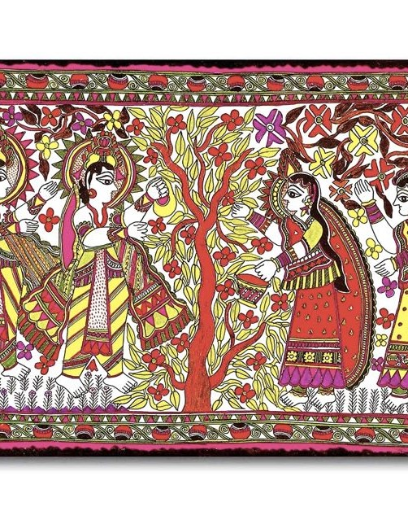

1. Madhubani Painting- Bihar

Among the different types of Indian paintings, one of the most celebrated styles of the Indian art form is, Madhubani. This art form originated in the Mithila region of Bihar as a form of wall art. The name of this beautiful art form is derived from a village called ‘Madhubani’ in Bihar. This spectacular art style was unknown to the outside world until the British colonial Archer discovered them in 1934 while inspecting the damage after the massive Bihar earthquake.
These paintings were first painted by artists hailing from Madhubani. King Janakraj, father of goddess Sita wanted the artists to capture moments of Sita’s wedding with Lord Ram. Predominately, the themes revolve around mythology, Hindu Gods, and various royal court scenarios